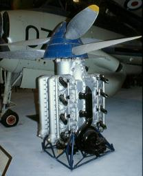

|
Model Club |
Articles /
GoingtoEnglandGoing to England? ......SEE ALSO; WELL WHAT DO YOU KNOW. YEOVILTON? 
Fairey P 24 How would you like to check this out? The picture shows the only surviving example of the type Fairey P 24 engine designed and built before WW2. It is described in the museum literature and in Bill Gunston’s Encyclopaedia of Aircraft Engines as a 24 cylinder engine, unusual inasmuch that it comprises two separate 12 cylinder engines which can be operated individually each component driving its own propeller in the contra-rotating pair. This project was started and conducted throughout under secrecy because Rolls Royce had a definite domination of the inline engine field at the time and “newcomers” were frowned upon. Similar pressure was applied to Roy Fedden at Bristol Aero Engines persuading him to concentrate on radials. Fairey’s were not able to test the combined unit because their test stand was unable to accommodate the anticipated 2000 Hp (rather optimistic I think for 1938/9). The unit illustrated flew in a Fairey Battle and at the outbreak of the war and was shipped to the US for evaluation where it flew approximately 250 hours and was subsequently returned to the UK. The problem I have with all of this is that the photograph which I took in the 1980s shows what I would say was a 16 cylinder engine.
Prior to the Battle installation, a P-24 was installed and flown in a Fairey Fox, the only picture of this that I have seen is of poor quality but could have 12 exhaust ports on the side toward the camera. This supports the view that a 24 cyl. unit was produced in the P-24 project and possibly displayed problems in flight unseen on a static test stand prompting the design team to produce a smaller unit which would be cheaper to work on and a lighter and stiffer unit to continue flight trials.
Since this was carried out in secrecy, records are sketchy and only those on a ‘need to know’ basis would have access to the facts of the project, there cannot be many of those people left today. This was an interesting exercise interrupted by the war but if the resulting information on the matter is known to be incorrect, let’s fix it. So if you are able to visit Yeovilton, please find this engine and count the ignition leads, there should be two per cylinder.
Ron Wyman, Stratford Model Club Librarian. |
{kind=link}